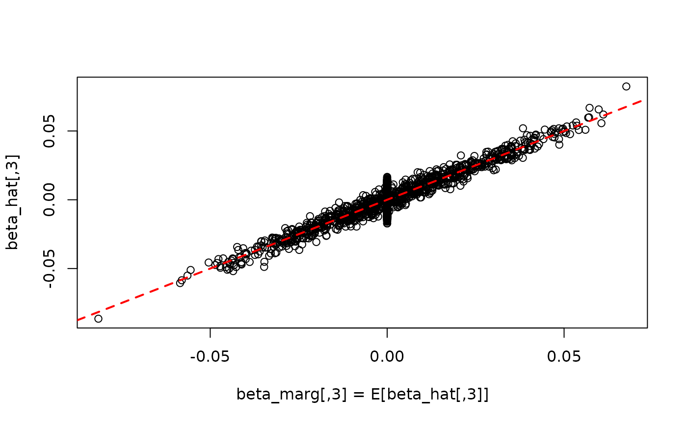
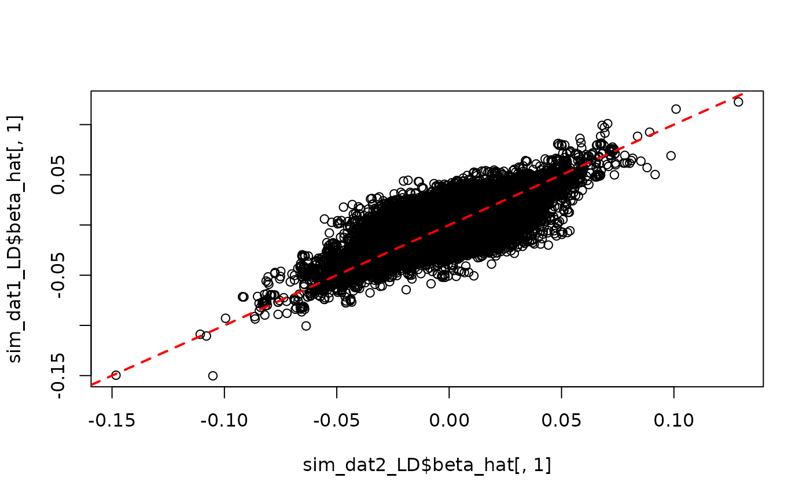

library(simGWAS)
library(DiagrammeR)
library(dplyr)
#>
#> Attaching package: 'dplyr'
#> The following objects are masked from 'package:stats':
#>
#> filter, lag
#> The following objects are masked from 'package:base':
#>
#> intersect, setdiff, setequal, union
library(reshape2)
library(ggplot2)
set.seed(1)Introduction
This vignette demonstrates how to use the sim_mv
function to simulate data a few different types of GWAS data.
Introduction to sim_mv
The sim_mv function generates GWAS summary statistics
for multiple continuous traits from a linear structural equation model
encoded as a matrix of direct effects. Variants can be generated with or
without LD. There are also some helper functions for LD-pruning and
generating special kinds of direct effect matrices.
The sim_mv function is a wrapper to a more general
function sim_lf which generates summary statistics given a
latent factor structure for a set of traits.
Basic Usage
Input
The sim_mv function has five required arguments:
-
N: The GWAS sample size for each trait. This can be a scalar, vector or matrix. If a vector,Nshould have length equal to the number of traits. If there are overlapping samples between GWAS,Nshould be a matrix (see “Sample Overlap” below). -
J: The number of SNPs to simulate (scalar). -
h2: The hertiability of each trait. This can be a scalar or a vector with length equal to the number of traits generated. -
pi: The proportion of all SNPs that have a direct effect on each trait. This can be a scalar or a vector with length equal to the number of traits generated. -
G: A matrix specifying direct effects in the linear structural equation model. ForMtraits with no causal relationships, useG = matrix(0, nrow = M, ncol = M )orG = M.
There are additional optional arguments:
-
R_E: Matrix giving correlation between environmental components of each trait (see “Sample Overlap” for more details). Defaults to the identity.R_Eonly affects summary statistics when there is sample overlap. -
R_LD: A list of LD blocks (See “Simulating Data with LD”). -
af: Optional vector of allele frequencies. -
sporadic_pleiotropy: Allow a single variant to have direct effects on multiple traits. Defaults to TRUE. -
pi_exact: If TRUE, the number of direct effect SNPs for each trait will be exactly equal toround(pi*J). Defaults to FALSE. -
h2_exact: If TRUE, the heritability of each trait will be exactlyh2. Defaults to FALSE. -
est_s: If TRUE, return estimates of se(beta_hat). -
return_dat: A developer option, return some extra data that is useful for debugging and testing.
Output
The sim_mv function returns a list with the following
elements
GWAS summary statistics are contained in two or three matrices:
-
beta_hat: Simulated GWAS effect estimates and standard errors. -
se_beta_hat: True standard errors ofbeta_hat. -
s_estimate: Ifest_s= TRUEthen a simulated estimate ofse_beta_hat.
True marginal and joint total and direct effects are contained in four matrices:
-
beta_joint: Total causal effects of SNPs on traits. -
beta_marg: Expected marginal association of SNPs on traits.beta_margis the expected value ofbeta_hat. When there is no LD,beta_margandbeta_jointare the same. -
direct_SNP_effects_joint: Direct causal effects of SNPs on traits. Direct means not mediated by other traits. -
direct_SNP_effects_marg: Likebeta_margbut considering only direct rather than total effects.
The relationship between traits is contained in two matrices:
-
direct_trait_effects: Matrix of direct effects between traits -
total_trait_effects: Matrix of total effects between traits
Trait covariance is described by four matrices:
-
Sigma_G: Genetic variance-covariance matrix, determined by heritability andG. -
Sigma_E: Environmental variance-covariance matrix. This is determined by heritability andR_E. -
trait_corr: Population trait correlation, equal toSigma_G + Sigma_E. -
R: Correlation in sampling error ofbeta_hatacross traits, equal totrait_corrscaled by a matrix of sample overlap proportions.
The order of the columns of all results corresponds to the order of
variables in G.
Specifying the DAG
The matrix G specifies a linear structural equation
model for a set of traits. To generate a set of \(M\) traits with no causal relationships,
G can be set either equal to M or to an \(M\times M\) matrix of 0’s. Otherwise,
G must be an \(M \times
M\) matrix with G[i,j] specifying the direct linear
effect of trait \(i\) on trait \(j\). The diagonal entries of \(G\) should be 0 (no self effects). An error
will be generated if G specifies a graph that contains
cycles. All traits are assumed to have variance equal to 1, so
G[i,j]^2 is the proportion of trait \(j\) variance explained by the direct effect
of trait \(i\).
For example, the matrix
G <- matrix(c(0, sqrt(0.25), 0, sqrt(0.15),
0, 0, 0, sqrt(0.1),
sqrt(0.2), 0, 0, -sqrt(0.3),
0, 0, 0, 0), nrow = 4, byrow = TRUE)
colnames(G) <- row.names(G) <- c("X", "Y", "Z", "W")
G
#> X Y Z W
#> X 0.0000000 0.5 0 0.3872983
#> Y 0.0000000 0.0 0 0.3162278
#> Z 0.4472136 0.0 0 -0.5477226
#> W 0.0000000 0.0 0 0.0000000corresponds to the graph
To simulate data from this graph, we can use
sim_dat1 <- sim_mv(G = G,
J = 50000,
N = 60000,
h2 = c(0.3, 0.3, 0.5, 0.4),
pi = 1000/50000)
#> SNP effects provided for 50000 SNPs and 4 traits.Using N = 60000 indicates that all four GWAS have a
sample size of 60,000 and that there is no overlap in samples between
GWAS. The h2 argument provides the heritability of each
trait. The pi argument gives the expected proportion of
direct effect variants for each trait. In this case, since
J = 50000 and pi = 1000/50000, we expect each
trait to have 1000 direct effect variants.
Using the default settings, there is some randomness in the number of
direct effect variants and the total heritability. We can see the
realized values by looking at the direct_SNP_effects_joint
matrix and Sigma_G in the simulation data object.
Sigma_G is the realized genetic variance-covariance matrix.
The diagonal values are the realized heritability of each trait.
colSums(sim_dat1$direct_SNP_effects_joint != 0)
#> [1] 1032 1026 952 985
sim_dat1$Sigma_G
#> X Y Z W
#> X 0.31379739 0.15642833 0.2242326 0.04843606
#> Y 0.15642833 0.30692614 0.1112905 0.09569127
#> Z 0.22423261 0.11129048 0.4975486 -0.15038721
#> W 0.04843606 0.09569127 -0.1503872 0.38516519By default, we allow variants to have direct effects on multiple traits, a phenomenon referred to as sporadic pleiotropy. In this case, the majority of variants have direct effects on only one trait but 122 variants directly affect more than one trait.
A <- data.frame(sim_dat1$direct_SNP_effects_joint != 0)
names(A) <- paste0("Direct ", c("X", "Y", "Z", "W"), " effect")
group_by_all(A) %>%
summarize(n = n()) %>%
arrange(-n)
#> `summarise()` has grouped output by 'Direct X effect', 'Direct Y effect',
#> 'Direct Z effect'. You can override using the `.groups` argument.
#> # A tibble: 11 × 5
#> # Groups: Direct X effect, Direct Y effect, Direct Z effect [7]
#> `Direct X effect` `Direct Y effect` `Direct Z effect` `Direct W effect` n
#> <lgl> <lgl> <lgl> <lgl> <int>
#> 1 FALSE FALSE FALSE FALSE 46127
#> 2 TRUE FALSE FALSE FALSE 973
#> 3 FALSE TRUE FALSE FALSE 960
#> 4 FALSE FALSE FALSE TRUE 935
#> 5 FALSE FALSE TRUE FALSE 883
#> 6 FALSE TRUE TRUE FALSE 30
#> 7 TRUE FALSE TRUE FALSE 21
#> 8 TRUE TRUE FALSE FALSE 21
#> 9 FALSE FALSE TRUE TRUE 18
#> 10 TRUE FALSE FALSE TRUE 17
#> 11 FALSE TRUE FALSE TRUE 15These features can be controlled using the pi_exact,
h2_exact, and sporadic_pleiotropy options.
Using pi_exact = TRUE forces the number of direct effect
variants to be exactly equal to 1000. h2_exact = TRUE
forces the realized heritability to be (nearly) exactly equal to the
input h2 and sporadic_pleiotropy = FALSE
prevents sporadic pleiotropy. If sporadic_pleiotropy = TRUE
(the default value), h2_exact will result in trait
heritabilities very close but not exactly equal to h2. Note
that some scenarios with either many traits or large values of
pi are inconsistent with
sporadic_pleiotropy = FALSE because there are not enough
variants to exclude overlap between traits. In these cases using
sporadic_pleiotropy = FALSE will result in an error.
sim_dat2 <- sim_mv(G = G,
J = 50000,
N = 60000,
h2 = c(0.3, 0.3, 0.5, 0.4),
pi = 1000/50000,
pi_exact = TRUE,
h2_exact = TRUE,
sporadic_pleiotropy = FALSE)
#> SNP effects provided for 50000 SNPs and 4 traits.
sim_dat2$Sigma_G
#> X Y Z W
#> X 0.30000000 0.15000000 0.2236068 0.04114918
#> Y 0.15000000 0.30000000 0.1118034 0.09172584
#> Z 0.22360680 0.11180340 0.5000000 -0.15190340
#> W 0.04114918 0.09172584 -0.1519034 0.40000000
A <- data.frame(sim_dat2$direct_SNP_effects_joint != 0)
names(A) <- paste0("Direct ", c("X", "Y", "Z", "W"), " effect")
group_by_all(A) %>%
summarize(n = n()) %>%
arrange(-n)
#> `summarise()` has grouped output by 'Direct X effect', 'Direct Y effect',
#> 'Direct Z effect'. You can override using the `.groups` argument.
#> # A tibble: 5 × 5
#> # Groups: Direct X effect, Direct Y effect, Direct Z effect [4]
#> `Direct X effect` `Direct Y effect` `Direct Z effect` `Direct W effect` n
#> <lgl> <lgl> <lgl> <lgl> <int>
#> 1 FALSE FALSE FALSE FALSE 46000
#> 2 FALSE FALSE FALSE TRUE 1000
#> 3 FALSE FALSE TRUE FALSE 1000
#> 4 FALSE TRUE FALSE FALSE 1000
#> 5 TRUE FALSE FALSE FALSE 1000Generating \(G\) from “XYZ” mode.
The function xyz_to_G will generate a matrix, \(G\), corresponding to a specific “XYZ” DAG
form. In the “XYZ” DAG, there is an exposure (\(X\)), an outcome (\(Y\)), and \(M-2\) other variables, \(Z_1, \dots, Z_{M-2}\).
There is a (possibly 0) effect of \(X\) on \(Y\) specified by the gamma
argument. Variables \(Z_1, \dots,
Z_{M-2}\) can have effects either on or from \(X\) and/or \(Y\) or both but there are no affects \(Z_1, \dots, Z_{M-2}\) on each other.
Effects between each \(Z_m\) and \(X\) and \(Y\) respectively are given in the
tau_xz and tau_yz arguments. The direction of
these effects is given in the dir_xz and
dir_yz arguments. All four of these arguments should have
length \(M-2\).
The direction parameters dir_xz and dir_yz
are vectors of 1 or -1 with 1 indicating an effect on \(X\) or \(Y\) and -1 indicating an effect from \(X\) or \(Y\). Effect size arguments
gamma, tau_xz, and tau_yz are
given as signed proportion of variance explained. So if
gamma = -0.3, The direct effect of \(X\) explains 30% of the variance of \(Y\) and the effect of \(X\) on \(Y\) is negative.
For example, the code
myG <- xyz_to_G(tau_xz = c(0.1, -0.15, 0.2, 0.3),
tau_yz = c(0, 0.2, -0.25, 0.15),
dir_xz = c(1, 1, -1, -1),
dir_yz = c(1, 1, -1, 1),
gamma = 0.3)generates the matrix corresponding to the graph below:
The weights in the graph give the effect size. Note that this is the
square root of the value provided in tau_xz and
tau_yz which specifies the percent variance explained. For
example, the effect of \(Z_1\) on \(X\) is \(0.316 =
\sqrt{0.1}\) and the effect of \(Z_2\) on \(X\) is \(-0.387 =
- \sqrt{0.15}\).
A Closer Look at the Output
We can now take a look at the output. Summary statistics are
contained in the beta_hat, se_beta_hat, and if
est_s = TRUE was used, s_estimate. These all
have dimension \(J\times M\) where
\(M\) is the number of traits.
names(sim_dat1)
#> [1] "beta_hat" "se_beta_hat"
#> [3] "direct_SNP_effects_marg" "direct_SNP_effects_joint"
#> [5] "direct_trait_effects" "total_trait_effects"
#> [7] "beta_joint" "beta_marg"
#> [9] "trait_corr" "R"
#> [11] "Sigma_G" "Sigma_E"
#> [13] "snp_info"
dim(sim_dat1$beta_hat)
#> [1] 50000 4
head(sim_dat1$beta_hat)
#> X Y Z W
#> [1,] 0.0074008360 0.0006032969 0.0012957544 2.606933e-07
#> [2,] -0.0005043024 -0.0023938074 -0.0006589290 -3.637417e-03
#> [3,] 0.0025144298 0.0033178233 0.0080631826 1.817726e-03
#> [4,] 0.0060358783 0.0011088796 0.0008868393 3.025173e-03
#> [5,] -0.0034143415 -0.0063942366 -0.0012815257 -1.537479e-03
#> [6,] 0.0030201757 -0.0023909927 0.0061494625 3.285122e-04
head(sim_dat1$se_beta_hat)
#> [,1] [,2] [,3] [,4]
#> [1,] 0.004082483 0.004082483 0.004082483 0.004082483
#> [2,] 0.004082483 0.004082483 0.004082483 0.004082483
#> [3,] 0.004082483 0.004082483 0.004082483 0.004082483
#> [4,] 0.004082483 0.004082483 0.004082483 0.004082483
#> [5,] 0.004082483 0.004082483 0.004082483 0.004082483
#> [6,] 0.004082483 0.004082483 0.004082483 0.004082483The direct_trait_effects object is a matrix giving the
input G while total_trait_effects gives the
total effect of each trait on each other trait.
sim_dat1$direct_trait_effects
#> X Y Z W
#> X 0.0000000 0.5 0 0.3872983
#> Y 0.0000000 0.0 0 0.3162278
#> Z 0.4472136 0.0 0 -0.5477226
#> W 0.0000000 0.0 0 0.0000000
sim_dat1$total_trait_effects
#> X Y Z W
#> X 0.0000000 0.5000000 0 0.5454122
#> Y 0.0000000 0.0000000 0 0.3162278
#> Z 0.4472136 0.2236068 0 -0.3038068
#> W 0.0000000 0.0000000 0 0.0000000True variant effects are also stored in the simulation object. The
direct_SNP_effects_joint and beta_joint
objects give the direct and total SNP effects. The _joint
ending indicates that these variables store the expected joint
association, conditional on all other variants, i.e. the causal effects.
GWAS effect estimates measure the marginal association, so we also store
the expected direct and total marginal associations in
direct_SNP_effects_marg and beta_marg. When
all variants are independent (no LD), the expected joint and marginal
associations are the same.
all.equal(sim_dat1$beta_joint, sim_dat1$beta_marg)
#> [1] TRUEIf we had generated data with LD, this would not be the case (see
below for more on LD). beta_marg is always the expected
value of beta_hat.
Direct SNP effects are always independent across traits while total SNP effects are the sum of direct effects and indirect effects mediated by other traits. To see the difference, we make some plots.
First we plot direct SNP effects on \(Z\) vs direct SNP effects on \(W\)
plot(sim_dat1$direct_SNP_effects_joint[,3], sim_dat1$direct_SNP_effects_joint[,4],
xlab = "Direct Z effect", ylab = "Direct W effect")Most variants have direct effects on at most one of \(Z\) or \(W\) but a small number affect both because
sporadic_pleiotropy = TRUE by default.
Next we plot the total SNP effects on \(Z\) vs the total SNP effects on \(W\). Because \(Z\) has a causal effect on \(W\), all variants with effects on \(Z\) also affect \(W\). The line in the plot has slope equal
to the total effect of \(Z\) on \(W\). The majority SNPs that have non-zero
effect on \(Z\) fall exactly on this
line. With sporadic_pleiotropy= FALSE, all of the variants
with non-zero effect on \(Z\) would
fall on this line. The variants on the vertical line at 0 are variants
with non-zero direct effect on \(W\)
but no direct effect on \(Z\).
plot(sim_dat1$beta_joint[,3], sim_dat1$beta_joint[,4],
xlab = "Total Z effect", ylab = "Total W effect")
abline(0, sim_dat1$total_trait_effects[3,4], col = "red", lty = 2, lwd = 2)
Finally, we can verify that the observed GWAS effect estimate is a
noisy measurement of beta_marg.
plot(sim_dat1$beta_marg[,3], sim_dat1$beta_hat[,3],
xlab = "beta_marg[,3] = E[beta_hat[,3]]", ylab = "beta_hat[,3]")
abline(0, 1, col = "red", lty = 2, lwd = 2)
Standardized vs Non-Standardized Effects
If the af argument is omitted, sim_mv
returns standardized effects and standardized effect estimates. These
are the estimates we would obtain if genotypes were scaled to have
population variance 1 rather than being coded as 0, 1, and 2. The
relationship between standardized and non-standardized effect estimates
is \(\hat{\beta}_j^{(non-std)} =
\hat{\beta}_j^{(std)}/sd(g_j)\) where \(j\) indexes variants, \(sd(g_j)\) is the population standard
deviation of variant \(j\) (i.e. \(\sqrt{2 f_j (1-f_j)}\) where \(f_j\) is the allele frequency of variant
\(j\)). Similarly the relationship
between the standard error of standardized and non-standardized effect
estimates is \(se\left(\hat{\beta}_j^{(non-std)}\right) =
se\left(\hat{\beta}_j^{(std)}\right)/sd(g_j)\).
In sim_dat1, every effect estimate has the same standard
error because the standard error of \(\hat{\beta}_j^{(std)}\) is approximated as
\(1/\sqrt{N}\) and we used a common
sample size across all traits. Non-standardized effect estimates will
have different standard errors for different variants because these also
depend on variant allele frequencies.
Generating non-standardized effects requires allele frequencies
provided using the af argument which can accept a scalar,
in which case the same allele frequency is used for every SNP, a vector
of length J, or a function that takes a single argument and
returns a vector of allele frequencies with length determined by the
argument. If the af argument is provided,
sim_mv will return all results on the non-standardized
scale. The return object will also include a data frame,
snp_info giving the allele frequency of each variant.
sim_dat3 <- sim_mv(G = G,
N = 60000, J = 50000,
h2 = c(0.3, 0.3, 0.5, 0.4),
pi = 1000/50000,
af = function(n){rbeta(n, 1, 5)})
#> SNP effects provided for 50000 SNPs and 4 traits.
head(sim_dat3$se_beta_hat)
#> [,1] [,2] [,3] [,4]
#> [1,] 0.007098238 0.007098238 0.007098238 0.007098238
#> [2,] 0.007308474 0.007308474 0.007308474 0.007308474
#> [3,] 0.006234568 0.006234568 0.006234568 0.006234568
#> [4,] 0.006655536 0.006655536 0.006655536 0.006655536
#> [5,] 0.009450082 0.009450082 0.009450082 0.009450082
#> [6,] 0.006264830 0.006264830 0.006264830 0.006264830
head(sim_dat3$snp_info)
#> SNP AF
#> 1 1 0.2091275
#> 2 2 0.1934297
#> 3 3 0.3112959
#> 4 4 0.2512585
#> 5 5 0.1041644
#> 6 6 0.3058982Simulating Data with LD
sim_mv can be used to generate data with LD by inputting
a list of LD matrices and corresponding allele frequency information.
The function will work fastest if the LD matrix is broken into small
blocks. The input data format for the LD pattern is a list of either a)
matrices, b) sparse matrices (class dsCMatrix) or c) eigen
decompositions (class eigen). R_LD is
interpreted as providing blocks in a block-diagonal SNP correlation
matrix. The package contains a built in data set containing the LD
pattern from Chromosome 19 in HapMap3 broken into 39 blocks. This LD was
estimated from the HapMap3 European subset using LDShrink. This data set
can also be downloaded here. The LD
pattern must be accompanied by a vector of allele frequencies with
length equal to the total size of the LD pattern (i.e. the sum of the
size of each block in the list).
Let’s look at the built-in LD data
data("ld_mat_list")
data("AF")
length(ld_mat_list)
#> [1] 39
sapply(ld_mat_list, class)
#> [1] "dsCMatrix" "dsCMatrix" "dsCMatrix" "dsCMatrix" "dsCMatrix" "dsCMatrix"
#> [7] "dsCMatrix" "dsCMatrix" "dsCMatrix" "dsCMatrix" "dsCMatrix" "dsCMatrix"
#> [13] "dsCMatrix" "dsCMatrix" "dsCMatrix" "dsCMatrix" "dsCMatrix" "dsCMatrix"
#> [19] "dsCMatrix" "dsCMatrix" "dsCMatrix" "dsCMatrix" "dsCMatrix" "dsCMatrix"
#> [25] "dsCMatrix" "dsCMatrix" "dsCMatrix" "dsCMatrix" "dsCMatrix" "dsCMatrix"
#> [31] "dsCMatrix" "dsCMatrix" "dsCMatrix" "dsCMatrix" "dsCMatrix" "dsCMatrix"
#> [37] "dsCMatrix" "dsCMatrix" "dsCMatrix"
# This prints the number of SNPs in each block
sapply(ld_mat_list, nrow)
#> [1] 140 519 339 435 523 280 675 325 651 548 274 483 442 744 460 177 469 173 358
#> [20] 564 392 737 596 818 307 863 276 435 204 364 480 381 757 844 753 656 483 856
#> [39] 709
sapply(ld_mat_list, nrow) %>% sum()
#> [1] 19490
length(AF)
#> [1] 19490The LD pattern covers 19,490 SNPs, equal to the length of the
AF object. A supplied LD pattern does not have to be the
same size as the number of SNPs we wish to generate. It will be repeated
or subset as necessary to create an LD pattern of the appropriate size.
The built-in LD pattern corresponds to a density of about 1.2 million
variants in per genome. However, for this example, we will generate data
for only 100k variants. This means that causal effects will be denser
than they might be in more realistic data.
set.seed(10)
sim_dat1_LD <- sim_mv(G = G,
J = 1e5,
N = 60000,
h2 = c(0.3, 0.3, 0.5, 0.4),
pi = 1000/1e5, R_LD = ld_mat_list,
af = AF)
#> SNP effects provided for 100000 SNPs and 4 traits.In data with LD, the _joint objects and
_marg objects are not identical. For example, we can
compare beta_joint and beta_marg for the third
trait (\(Z\)).

Variants with non-zero values of beta_joint[,3] have
causal effects on \(Z\) while those
with non-zero values of beta_marg[,3] have non-zero
(population) marginal association with \(Z\), meaning that they are in LD with at
least one causal variant. In the plot, we see that many variants with no
causal effect nevertheless have non-zero marginal association, as
expected. The causal variants don’t fall exactly on the red line because
in some cases, multiple causal variants are in LD with each other.
LD-Pruning, LD-proxies, and LD matrix extraction
Many post-GWAS applications such as Mendelian randomization and
polygenic risk score construction require an LD-pruned set of variants.
simGWAS contains a few LD-related functions to help with
pruning and testing methods that require input LD matrices. Note that
all of these methods use the true LD pattern rather than estimated
LD.
The sim_ld_prune function will perform LD-clumping on
simulated data, prioritizing variants according to a supplied
pvalue vector. Although this argument is called
pvalue, it can be any numeric vector used to prioritize
variants. The pvalue argument can also accept an integer.
If pvalue = i, variants will be prioritized according to
the p-value for the trait in the column i. If
pvalue is omitted, variants will be prioritized randomly
(so a different result will be obtained each re-run unless a seed is
set).
To speed up performance, if you only need variants with \(p\)-value less than a certain threshold,
supply the pvalue_thresh argument. Below we prune based on
the p-values for trait \(Z\) in two
equivalent ways.
pruned_set1 <- sim_ld_prune(dat = sim_dat1_LD,
pvalue = 3,
R_LD = ld_mat_list,
r2_thresh = 0.1,
pval_thresh = 1e-6)
#> Prioritizing variants based on p-value for trait 3
length(pruned_set1)
#> [1] 404
pval3 <- with(sim_dat1_LD, 2*pnorm(-abs(beta_hat[,3]/se_beta_hat[,3])))
pruned_set2 <- sim_ld_prune(dat = sim_dat1_LD,
pvalue = pval3,
R_LD = ld_mat_list,
r2_thresh = 0.1,
pval_thresh = 1e-6)
all.equal(pruned_set1, pruned_set2)
#> [1] TRUEsim_ld_prune returns a vector of indices corresponding
to an LD-pruned set of variants.
The sim_ld_proxy function will return indices of
LD-proxies (variants with LD above a given threshold) with a supplied
set of variants. Here we extract proxies for a few arbitrary variants.
The return_mat option will cause the function to return the
LD matrix for the proxies as well as the indices of proxies
ld_proxies <- sim_ld_proxy(sim_dat1_LD, index = c(100, 400, 600), R_LD = ld_mat_list, r2_thresh = 0.64, return_mat = TRUE)
ld_proxies
#> [[1]]
#> [[1]]$index
#> [1] 100
#>
#> [[1]]$proxy_index
#> [1] 98 99
#>
#> [[1]]$Rproxy
#> [,1] [,2] [,3]
#> [1,] 1.0000000 0.9568668 0.9745924
#> [2,] 0.9568668 1.0000000 0.9798682
#> [3,] 0.9745924 0.9798682 1.0000000
#>
#>
#> [[2]]
#> [[2]]$index
#> [1] 400
#>
#> [[2]]$proxy_index
#> [1] 395 396 397 398 399 401 402
#>
#> [[2]]$Rproxy
#> [,1] [,2] [,3] [,4] [,5] [,6] [,7]
#> [1,] 1.0000000 0.9495092 0.9661446 0.9793188 0.9730871 0.9306611 0.9105497
#> [2,] 0.9495092 1.0000000 0.9812294 0.9675572 0.9742288 0.9302869 0.8876271
#> [3,] 0.9661446 0.9812294 1.0000000 0.9841205 0.9905250 0.9454487 0.9054550
#> [4,] 0.9793188 0.9675572 0.9841205 1.0000000 0.9810106 0.9367627 0.9175545
#> [5,] 0.9730871 0.9742288 0.9905250 0.9810106 1.0000000 0.9522425 0.9119614
#> [6,] 0.9306611 0.9302869 0.9454487 0.9367627 0.9522425 1.0000000 0.8731959
#> [7,] 0.9105497 0.8876271 0.9054550 0.9175545 0.9119614 0.8731959 1.0000000
#> [8,] 0.8080771 0.7821419 0.7934351 0.8097815 0.7991366 0.7643812 0.7522628
#> [,8]
#> [1,] 0.8080771
#> [2,] 0.7821419
#> [3,] 0.7934351
#> [4,] 0.8097815
#> [5,] 0.7991366
#> [6,] 0.7643812
#> [7,] 0.7522628
#> [8,] 1.0000000
#>
#>
#> [[3]]
#> [[3]]$index
#> [1] 600
#>
#> [[3]]$proxy_index
#> [1] 601 606
#>
#> [[3]]$Rproxy
#> [,1] [,2] [,3]
#> [1,] 1.0000000 -0.8044757 0.8670863
#> [2,] -0.8044757 1.0000000 -0.7193148
#> [3,] 0.8670863 -0.7193148 1.0000000Finally, the sim_extract_ld function will extract the LD
matrix for a set of variants. We can use this to check the previous
functions. First, both of the proxies for index 600 should have
correlation greater than 0.8 with index 600.
ld_mat1 <- sim_extract_ld(sim_dat1_LD, index = c(600, ld_proxies[[3]]$proxy_index), R_LD = ld_mat_list)
ld_mat1
#> [,1] [,2] [,3]
#> [1,] 1.0000000 -0.8044757 0.8670863
#> [2,] -0.8044757 1.0000000 -0.7193148
#> [3,] 0.8670863 -0.7193148 1.0000000
all(abs(ld_mat1[,1]) > 0.8)
#> [1] TRUENext we can check that the LD-pruned set have no mutual correlations greater than \(\sqrt(0.1) \approx 0.316\)
ld_mat2 <- sim_extract_ld(sim_dat1_LD, index = pruned_set1, R_LD = ld_mat_list)
diag(ld_mat2) <- 0 # remove the diagonal
all(ld_mat2^2 < 0.1)
#> [1] TRUESample Overlap and Specifying Sample Size
If two GWAS are performed on different traits using overlapping samples, the sampling errors of effect estimates will be correlated. If the two GWAS have sample sizes \(N_1\) and \(N_2\) with \(N_c\) overlapping samples, then the correlation of \(\hat{z}_{1j}\) and \(\hat{z}_{2j}\), \(z\)-scores for variant \(j\) in study 1 and study 2, is approximately \(\frac{N_c}{\sqrt{N_1 N_2}} \rho_{1,2}\) where \(\rho_{1,2}\) is the trait correlation.
In sim_mv it is possible to specify sample overlap
between studies by providing N as a matrix or a data frame
rather than a scalar or a vector. If N is a matrix, it
should have dimension \(M\times M\)
with N[i,i] giving the sample size of study \(i\) and N[i,j] giving the
number of overlapping samples between studies \(i\) and \(j\). In data frame format, \(N\) should have columns named
trait_1, … trait_[M] and N. The
trait_[x] columns will be interpreted as logicals and
N gives the number of samples in each combination of
studies. For example, the following specifications for two traits are
equivalent.
N <- matrix(c(60000, 30000, 30000, 60000), nrow = 2, ncol = 2)
N
#> [,1] [,2]
#> [1,] 60000 30000
#> [2,] 30000 60000
Ndf <- data.frame(trait_1 = c(1, 1, 0),
trait_2 = c(0, 1, 1),
N = rep(30000, 3))
Ndf
#> trait_1 trait_2 N
#> 1 1 0 30000
#> 2 1 1 30000
#> 3 0 1 30000The data frame format contains more information than the matrix
format (for more than two traits) and is required to simulate individual
level data using sim_gwas_from_b which is covered in a
different vignette. To simulate summary statistics, either format can be
used.
In the model used by simGWAS, all traits can be
decomposed into a genetic component and an environmental component. We
always assume the environmental trait component is independent of the
genetic trait component. Correlation between the genetic components of
the specified traits is determined by the supplied DAG. It is also
possible to supply the correlation between the environmental components
of the traits using the R_E parameter.
Below is an example using the same 4 trait DAG we have been using so
far. We specify that all four GWAS have sample size 60,000 and there are
30,000 samples overlapping between any pair of GWAS.
simGWAS assumes that the trait correlation is the same in
any subset of samples so it doesn’t matter if the same 30,000 samples
are in all studies or if different sets overlap between different pairs
of studies. We also specify an environmental correlation matrix in which
the pairwise correlation in environmental effects for any pair of traits
is 0.4. R_E defaults to the identity if it is not
provided.
R_E <- matrix(0.4, nrow = 4, ncol = 4)
diag(R_E) <- 1
N <- matrix(30000, nrow = 4, ncol = 4)
diag(N) <- 60000
N
#> [,1] [,2] [,3] [,4]
#> [1,] 60000 30000 30000 30000
#> [2,] 30000 60000 30000 30000
#> [3,] 30000 30000 60000 30000
#> [4,] 30000 30000 30000 60000
set.seed(10)
sim_dat3 <- sim_mv(G = G,
N = N, J = 1e5, R_E = R_E,
h2 = c(0.3, 0.3, 0.5, 0.4),
pi = 1000/1e5)
#> SNP effects provided for 100000 SNPs and 4 traits.The simulation data object contains four matrices that describe
between study correlation, Sigma_E, the environmental
covariance, Sigma_G the genetic covaraince,
trait_corr equal to Sigma_G + Sigma_E, and
R which is equal to the row correlation of
beta_hat. R is equal to
trait_corr scaled by the a matrix of sample overlap
proportions.
sim_dat3$Sigma_E
#> X Y Z W
#> X 0.7090334 0.2815715 0.2459003 0.2589274
#> Y 0.2815715 0.6988607 0.2441299 0.2570632
#> Z 0.2459003 0.2441299 0.5330052 0.2244969
#> W 0.2589274 0.2570632 0.2244969 0.5909753
sim_dat3$Sigma_G
#> X Y Z W
#> X 0.29096656 0.1450691 0.2107734 0.04259396
#> Y 0.14506908 0.3011393 0.1049626 0.09462630
#> Z 0.21077337 0.1049626 0.4669948 -0.14157782
#> W 0.04259396 0.0946263 -0.1415778 0.40902469
sim_dat3$trait_corr
#> X Y Z W
#> X 1.0000000 0.4266406 0.4566737 0.3015214
#> Y 0.4266406 1.0000000 0.3490925 0.3516895
#> Z 0.4566737 0.3490925 1.0000000 0.0829191
#> W 0.3015214 0.3516895 0.0829191 1.0000000
sim_dat3$R
#> X Y Z W
#> X 1.0000000 0.2133203 0.22833684 0.15076068
#> Y 0.2133203 1.0000000 0.17454626 0.17584477
#> Z 0.2283368 0.1745463 1.00000000 0.04145955
#> W 0.1507607 0.1758448 0.04145955 1.00000000If there is no sample overlap, the R_E argument to
sim_mv will have no affect on summary statistics but will
influence the calculation of trait_corr. For example, in
our previous data generated without sample overlap and in which we did
not specify R_E we have
sim_dat1_LD$Sigma_E
#> X Y Z W
#> X 0.7102574 0.0000000 0.0000000 0.0000000
#> Y 0.0000000 0.6993647 0.0000000 0.0000000
#> Z 0.0000000 0.0000000 0.5315938 0.0000000
#> W 0.0000000 0.0000000 0.0000000 0.5913831
sim_dat1_LD$trait_corr
#> X Y Z W
#> X 1.00000000 0.14287919 0.2104649 0.03811431
#> Y 0.14287919 1.00000000 0.1064977 0.09272913
#> Z 0.21046486 0.10649774 1.0000000 -0.14287051
#> W 0.03811431 0.09272913 -0.1428705 1.00000000
sim_dat1_LD$R
#> X Y Z W
#> X 1 0 0 0
#> Y 0 1 0 0
#> Z 0 0 1 0
#> W 0 0 0 1The R matrix will always be the identity if there is no
sample overlap.
Generating Data for Multiple GWAS of the Same Trait
In some cases, you may want to generate multiple sets of summary
statistics for the same set of effect sizes. This would mimic performing
multiple GWAS on the same trait. The function
gen_bhat_from_b allows you to do this. This function takes
as input a matrix of either standardized or non-standardized joint
(causal) effects to b_joint_std or b_joint.
The function also requires the trait correlation matrix and the sample
size argument. Optionally, af and R_LD can be
supplied. The est_s argument functions in the same way as
in sim_mv.
Below, we generate new GWAS data for the effects in
sim_dat1_LD. Here we use the same LD pattern used
originally but we could have done otherwise. For example, we could
simulate GWAS in samples with different ancestry but supplying a
different LD pattern.
sim_dat2_LD <- gen_bhat_from_b(b_joint = sim_dat1_LD$beta_joint,
trait_corr = sim_dat1_LD$trait_corr,
N = 40000,
R_LD = ld_mat_list, af = AF)
#> SNP effects provided for 100000 SNPs and 4 traits.The resulting simulation data object only contains effect estimates,
standard errors, R, and snp_info. All other
information should match the original data set.
Below we compare effect estimates in the new study and the old study for trait \(X\).
plot(sim_dat2_LD$beta_hat[,1], sim_dat1_LD$beta_hat[,1])
abline(0, 1, col = "red", lty = 2, lwd = 2)
Our first simulation object sim_dat1 was generated with
no LD and without supplying the af argument, so the
beta_joint values for that object represent standardized
effects. If we were generating secondary studies from this object, we
should use the b_joint_std argument rather than
b_joint in the call to gen_bhat_from_b. If you
are not sure if you have standardized or non-standardized effects, check
the snp_info table. If the AF column is equal
to NA then the object contains standardized effects.
Otherwise, it contains non-standardized effects.